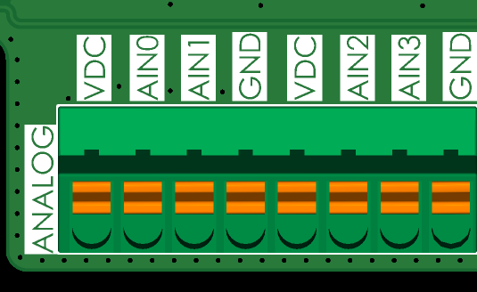
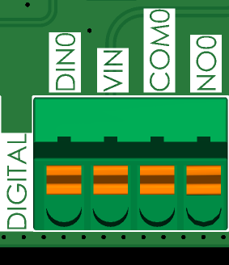
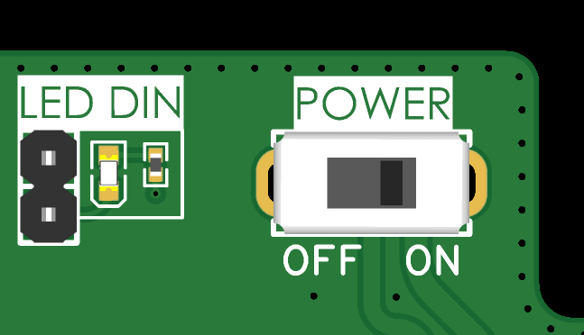
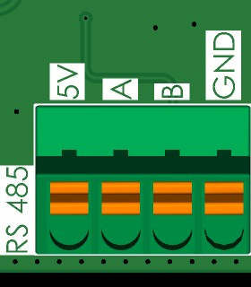
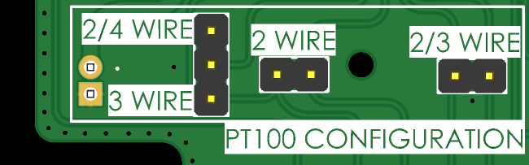
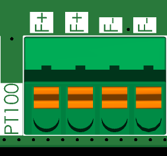
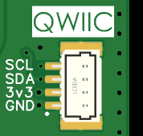
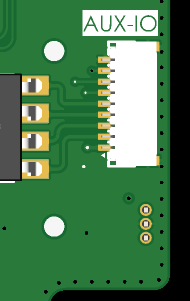
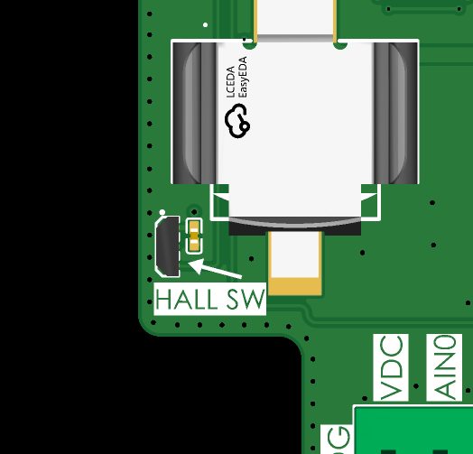
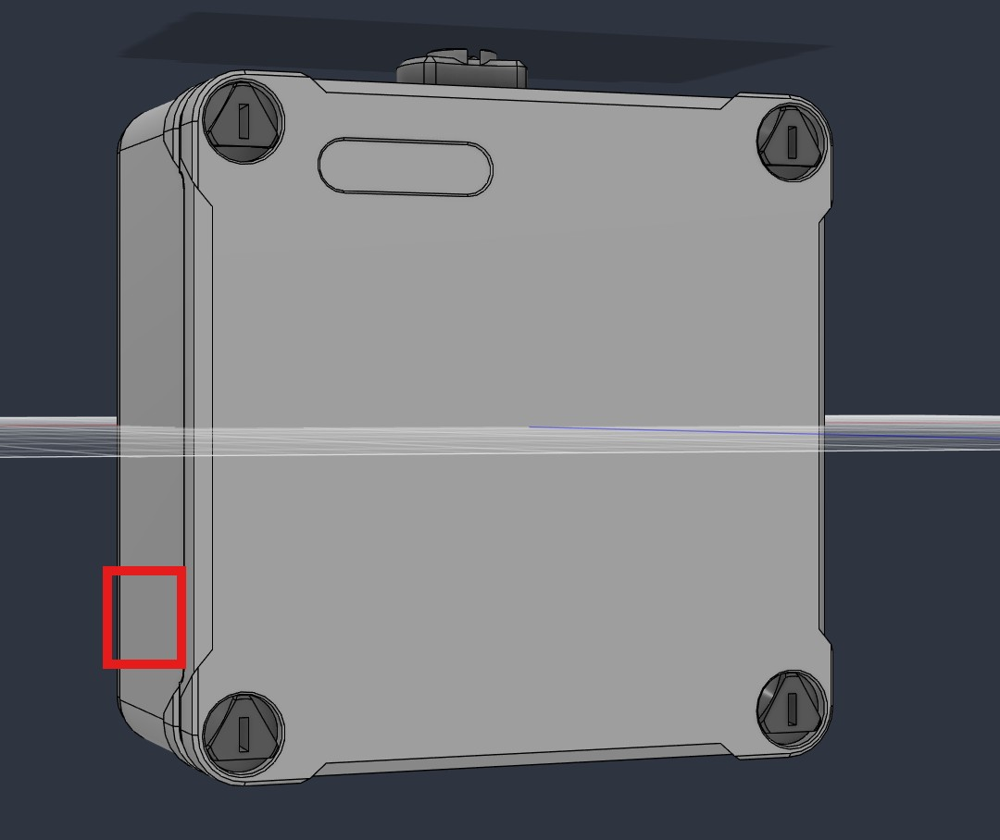

1. Sensor Connections
The ISURLOG device features multiple specialized inputs to integrate seamlessly with various industrial and environmental sensors.
1.1. Analog Inputs (4-20mA)
The ISURLOG is equipped with four protected analog inputs (AIN0 to AIN3). It is compatible with both actively (externally) and passively (ISURLOG-supplied) powered sensors.
Each analog input is protected by an automatic reset fuse.
| Sensor Type | Wiring Diagram | Power Source |
|---|---|---|
| Passive Sensor (External current loop) | Sensor (+) connects to VDC; Sensor (-) connects to the desired AINx. | ISURLOG's internal voltage regulator (VDC). |
| Active Sensor (Internal current loop) | Sensor (+) connects to the desired AINx; Sensor (-) connects to GND. | External power source. |

Wiring for passive (ISURLOG-powered) vs. active (externally powered) analog sensors.
1.2. Digital Input (State and Pulse Counter)
The ISURLOG features a dry contact digital input that can be used either as a status reader (open/closed) or as a pulse counter for devices like flow meters or water meters.
The connection is made using the following pins: VIN and DIN0.

Digital input wiring — VIN and DIN0 pins.
Digital Status Indicator (LED DIN)
The ISURLOG board includes a dedicated LED (LED DIN) that lights up continuously when the input is active (closed state).
Power Optimization Warning
To save energy in battery-powered applications, this LED can be easily disabled by removing the corresponding jumper on the PCB.

The LED DIN jumper — remove it to disable the status LED and save power.
1.3. Modbus Input (RS485)
The RS485 interface allows communication with up to 32 external sensors using the Modbus protocol. The input includes a built-in 120 Ohm termination resistor.
The connection uses the following pins:
- Communication: A and B pins.
- Power: Sensor power can be connected to the 5V pin or the VDC pin (for the 6 to 24V range). Sensor negative should connect to GND.

Modbus RTU (RS485) wiring — A and B pins.
1.4. PT100 Temperature Sensor Input
The ISURLOG supports PT100 temperature probes configured for 2, 3, or 4 wires.
Dual Configuration Requirement
Achieving an accurate reading requires two steps of configuration:
- Hardware (Jumpers): Soldering or removing the appropriate jumpers on the underside of the PCB.
- Software (Parameter): Setting the correct wire count in the Isurlog's configuration via IsurDASH.
| Wire Configuration | Required Jumpers | Connection to F+/F- |
|---|---|---|
| 2-Wire | Join the 2 WIRE, 2/3 WIRE, and 2/4 WIRE jumpers. | The two sensor wires connect to F+ and F-. |
| 3-Wire | Join the 2/3 WIRE and 3 WIRE jumpers; leave the rest open. | Connect the two common wires (typically ≈2Ω) to F+. Connect the third wire (typically 100Ω) to F-. |
| 4-Wire | Join the 2/4 WIRE jumper; leave the rest open. | Connect the pairs of common wires (typically ≈2Ω) together to F+ and F-. |

Jumper configuration for 2, 3, and 4-wire PT100 probes.

PT100 wiring to the F+/F- terminals.
1.5. Digital Output (Relay)
Next to the digital input, the same terminal block also breaks out a solid-state relay output, using the following pins:
- COM0: Common contact.
- NO0: Normally-open contact.
Relay output wiring — COM0 and NO0 pins, on the same terminal block as the digital input.
This is a solid-state relay rated for 2A / 60V, suitable for switching heavier external loads directly (e.g. pumps, valves, contactors, or other actuators) without needing an intermediate relay.
1.6. QWIIC I2C Port
The ISURLOG also breaks out its internal I2C bus through a standard QWIIC connector, to connect external QWIIC-compatible sensors and expansion boards. The pinout follows the standard QWIIC convention: GND, 3V3, SDA, SCL.

The QWIIC connector — GND, 3V3, SDA, SCL.
Power Note
The 3V3 rail on this connector is the datalogger's own main 3.3V supply — it cannot be switched off by firmware. If your application needs low power consumption, make sure the connected QWIIC sensor has its own proper sleep mode, or account for its idle/standby current draw in your power budget.
1.7. AUX-IO Connector
The AUX-IO connector is a 1mm-pitch (P=1mm) connector that breaks out extra signals from the ISURLOG's MCP23008 I/O expander — see 4.5 MCP23008 I/O Expander Pinout.
Pin 1 is marked with a triangle on the PCB silkscreen; pins are numbered from there, starting at the bottom of the connector in the image below.
| Pin | Signal | Description |
|---|---|---|
| 1 | 3V3 | Main 3.3V supply (same rail as the QWIIC connector). |
| 2 | NO2 | Normally-open contact, relay 2 of the on-board dual solid-state relay (GAQW212GEH). |
| 3 | COM2 | Common contact, relay 2 (GAQW212GEH). |
| 4 | NO1 | Normally-open contact, relay 1 (GAQW212GEH). |
| 5 | COM1 | Common contact, relay 1 (GAQW212GEH). |
| 6 | GP3 | MCP23008 GP3 — general-purpose I/O. |
| 7 | GP4 | MCP23008 GP4 — general-purpose I/O. |
| 8 | GP5 | MCP23008 GP5 — general-purpose I/O. |
| 9 | GND | Ground. |

The AUX-IO connector — pin 1 marked with a triangle on the silkscreen.
1.8. Internal Sensors and Diagnostics
The datalogger includes two onboard components for monitoring and field interaction:
-
SHT30 Sensor This sensor measures ambient temperature and humidity inside the enclosure. This acts as an early warning system for potential water ingress or component overheating, allowing for preventive maintenance.
-
Hall Effect Switch (On-Demand Wake-up) The ISURLOG is equipped with a digital Hall effect switch that allows for manual, instantaneous interaction with the device using a magnet. This "on-demand wake-up" function offers two operational modes:
Mode Magnet Interaction Datalogger Action Immediate Read & Send Hold the magnet near the sensor for approximately one second. The datalogger exits low-power mode, performs a complete cycle of sensor reading, and immediately transmits the data to the platform, without waiting for the next scheduled interval. Bluetooth Diagnostics Mode Hold the magnet near the sensor for more than five seconds. The ISURLOG activates its Bluetooth interface and enters pairing mode. This allows field personnel to connect directly for configurations and real-time sensor viewing.
Location
The magnetic sensor is positioned on the lower left corner of the PCB board, adjacent to the analog input connector and the first battery compartment (counting from the left).

The Hall effect sensor, lower left corner of the PCB.
Note for IP66 Enclosure
For ISURLOG dataloggers equipped with the IP66 enclosure, it is not necessary to open the casing for activation. The sensor is designed to be operated from the exterior by approaching a magnet to the lower part of the left side panel of the enclosure.

Activating the Hall sensor from outside an IP66 enclosure.